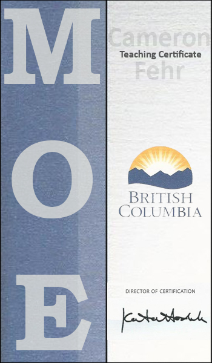

I started my education in California in 2008 while attending Azusa Pacific University. During this time, I would take classes ranging from graphic design to law and history. After a year in the US, I moved to the mainland to go to the University of the Fraser Valley. There, I took a combination of English and business classes including accounting and the history of the English language. I found both domains of study interesting but language held a special place in my mind.
Vancouver Island University was the last institution I attended and where I would decide to major in English and pursue a career in education. I would graduate with a Bachelor of Arts with a major in English by 2012.
Having appreciated the tightly knit community represented by VIU, I decided in 2015 to attend their education program and was rewarded with an enriching time and my education degree. I would have two practicums during this period: one based in Qualicum on Vancouver Island and the other in Queen Charlotte on Haida Gwaii.
They were both times of difficulty and growth, and I completed them with the fortitude of knowing that they were progressing me forward in my understanding of the profession and myself. I recall at Kwalkium Secondary where a teacher had said to me, after hearing me speak about a class I had just taught, "you're definitely one of us," which was encouraging for me to hear at the time.
I was given my teaching certificate in 2017 and have been a due paying member since. I read publications through the Learn newsletter and sometimes look for information offered through the Ministry of Education.
